History of the school buildings
In the beginning the school only had 2 blocks, the main block and the practical block. In addition to the classrooms, the main two storey block contains a modern kitchen, laboratory, library, changing rooms and showers, offices,
assembly hall with a stage and a gymnasium. There was also a wood and metal workshop, a horticultural wing and domestic science room. The playing fields were not available till 1963, a year after it opened. The reason we have big windows is because the
the structure has been specifically designed to obtain maximum light into the classrooms and there is storage space in each classroom. The buildings were blessed and formally opened by the Archbishop of Birmingham (Dr. Francis J. Grimshaw) on June 5th.
This is a picture of the main block building

Not soon after its opening the school quickly became very popular in the area and due to its high demand the school had too many pupils attending. As a solution to this the Headmaster decided to join a campus plan. As of 1962-3,
only half of the buildings were built which was Phase 1 of the project. Phase 2 of the building programme was completed for the year 1964-5. The new classrooms included a Geography room and a Needlework room (Textiles). The two-storey extension cost
around £72,000 and it caters for an additional 150 pupils, with a total of 450 pupils. Mr G. Grimshaw said "We have been pushing for these new extensions for the past four years. It is hoped that the work will be completed by the middle of next year,
but it is really needed for this September"- April 18th 1968. "6 years ago, the school was only two-form entry but this has increased to double that by 1969. The new buildings will allow us to go to five-form entry in the future and with the other
projects which are proposed we hope to finally have a six-form entry comprehensive unit" Said Mr. Grimshaw. The campus plan also meant the school started offering courses to G.C.E O level (The old GCSE's) without sacrificing its identity as a Catholic
School. The School Chaplain back then was Father R. Harding. The School also functioned as an integral part of the Parish St.John's Banbury.
This is a picture of a Newspaper Article on the rapid expansion of the School
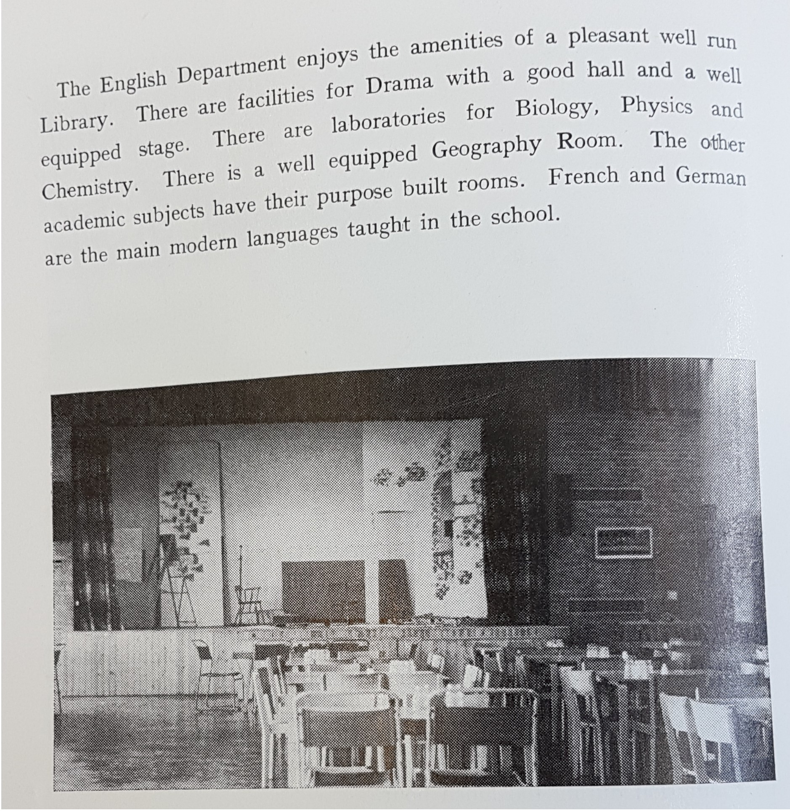
The English Department and Drama Hall
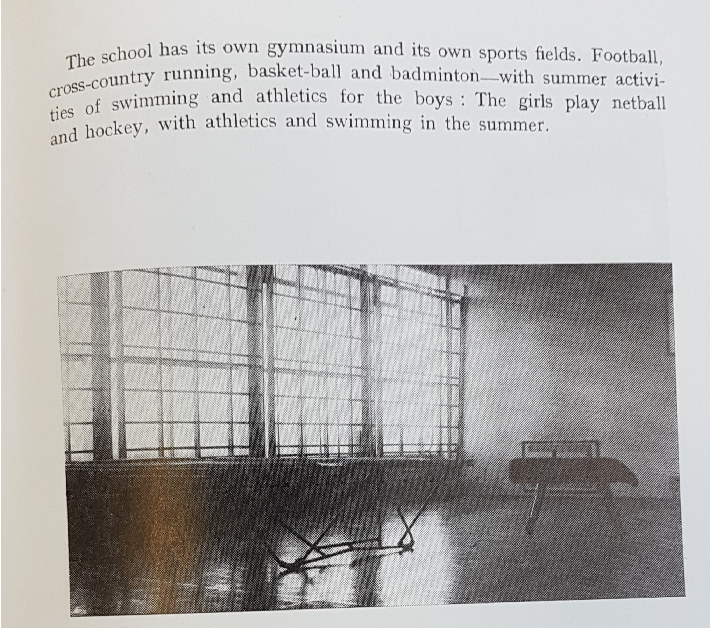
The Schools Gymnasium
The School continued to expand over the years and and with Phase 2 completed, a relatively small school was now a considerable size for a school providing comprehensive education. Sadly our first Headmaster,
George Grimshaw, passed away only a year after his post as Headmaster.
This is a picture of Headmaster George Grimshaw
The Chapel
Construction of the Chapel began around the beginning of the year 1968. It was blessed and inaugurated around October the 1st in the year 1968 by Auxiliary Bishop of Birmingham, Rt. Rev. Anthony Emery.
The building is one of the most unusual in the town. Pupils and Staff also played a part to make altar curtains, linen and the altar table. The tabernacle altar was designed by Mr. Friend and made by Mr. D. Bell. A.
The Chapel cost roughly £8,000 to build and when looked from above its design is clearly in the shape of an arrow described as "flying straight to God." It has a copper roof and a rear wall made of stained glass. Its design,
by Charles Friend, was suggested by Father Harding, who left Banbury to go abroad the year before the Chapel's completion. The Chapel has the ability to seat around 85 pupils. It has wooden benches and a confessional at the back.
It had plain glass windows. The Stations of the Cross came from St. John's Priory's- the first foundation of the Sisters of St. Paul in this country. The sisters held posts of Headship of St. John's School and St. Joseph's and
worked in the parishes. When the Priory closed the Sisters gave the Stations of the Cross and the Angelus bell to the School. Sr Theresa, the Parish Sister is a member of that community and now lives in Coach House. In addition they gave a number
of statues which you can find around the school today. The Chapel windows are designed by the same artist who made the plaques of the seven sacraments that were in the Chapel of Soli House. The idea was to make a link between the Retreat Centre
in Stratford (which was attended by pupils in Year 10 and Year 12) and the School. The same artist also did the Plaque of Blessed George Napier found at the entrance of the School.
Below are some pictures of the Chapel
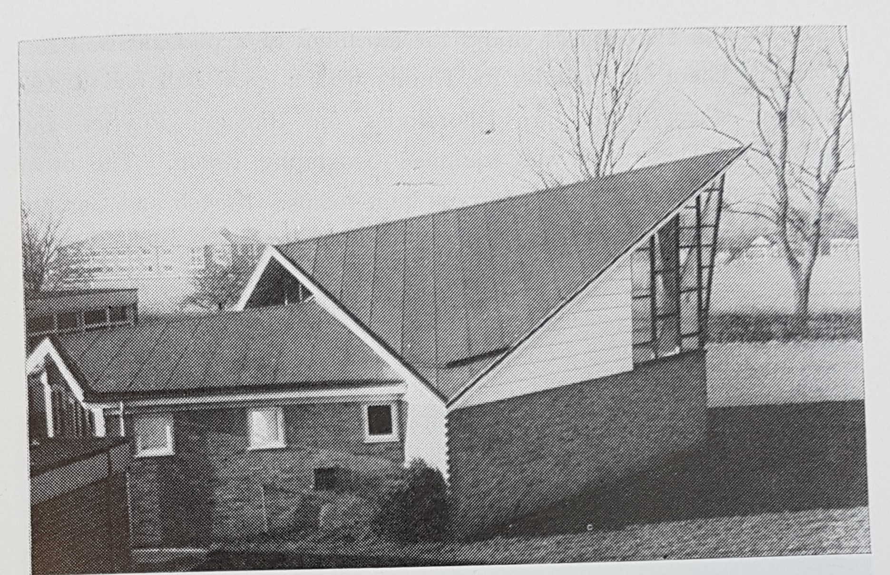
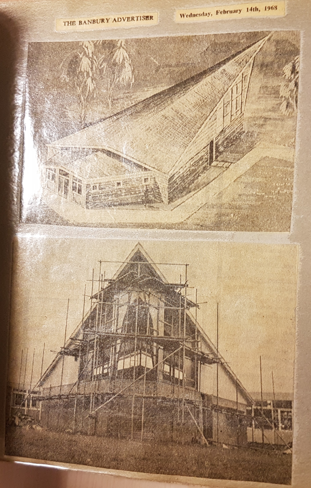
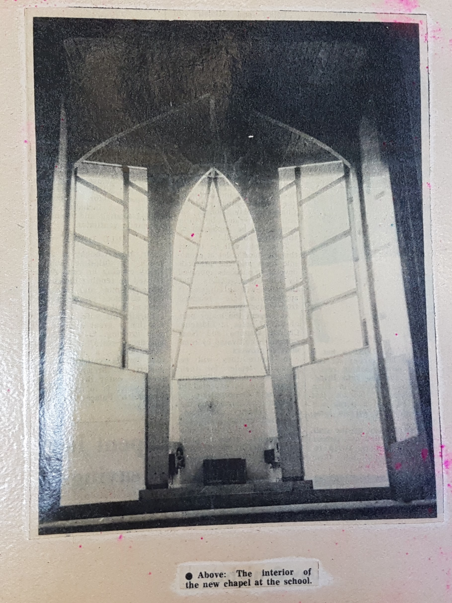
Here is a view of the Chapel in its present day and age:
Further Developments
A further block was added in 1975. In January 1981 the entrance was, as it is now from Addison Road and so it was facing the kitchen and a couple of classrooms back then. The story goes that the builders
misread the development plans and put the entrance in the wrong place! The room on the left was the library and at the back of the hall, where the offices are now, were two classrooms that were used for languages. What is now the
Drama Studio was a courtyard area with a woodwork room. The Learning Resource Centre used to be a Gymnasium. The I.T rooms by the Science department was an open area called Concourse. As the school grew it was used as a temporary
classroom just marked off by the lockers. The present day D.T room was a large room that looked out onto the field before the History corridors were built. The Science room at the top of the corridor was the old Music room with
practice rooms off. Before the Corrigan was erected and established there were a couple of green wooden huts used as classrooms. They were called Prinkash rooms as the huts came from Prinkash Abbey in Gloucestershire.
The Corrigan
Construction of the Corrigan Building was inspired by Monsignor Corrigan. The building was Blessed and Opened by Maurice Couve de Murville, 7th Archbishop of Birmingham on the 23rd September 1992.
Pictures of the Corrigan today:


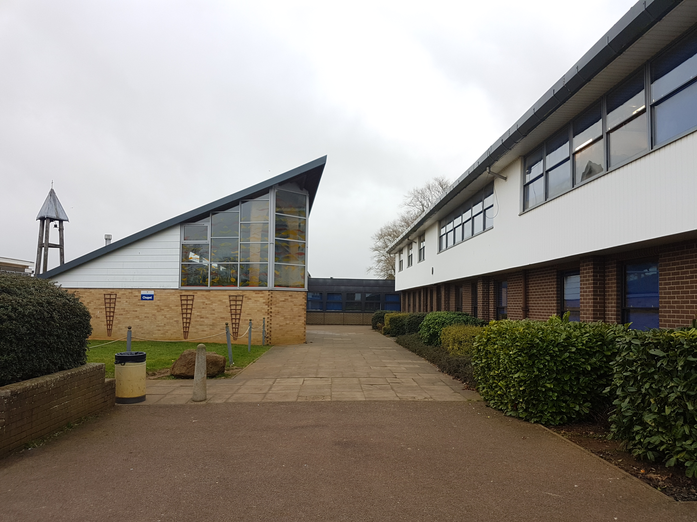
Here is a view from the playground of the Corrigan in its present day and age:
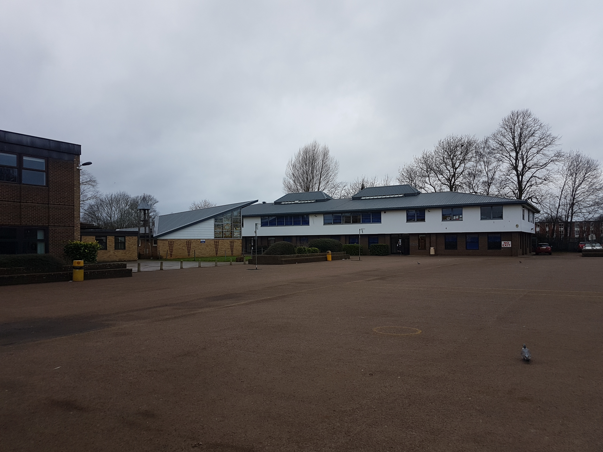
Recent Developments
The School gained Sports College status in September 2004. We had a multi use games area built and the Sports hall was opened. Both these facilities are let out continuously to the local community after school days.
The Corrigan was remodelled to turn what was the Library (the room at opposite end of the current Music room) into a number of classrooms, now used as the Languages Department. During these internal changes, there were changes being made to
the outside play areas; Raised flower beds and sitting areas were put into the playground. The Astroturf was put in and tables and benches put in between the Learning Resource Centre and the Sports Hall as a sitting area for students.
Headship of the School through time
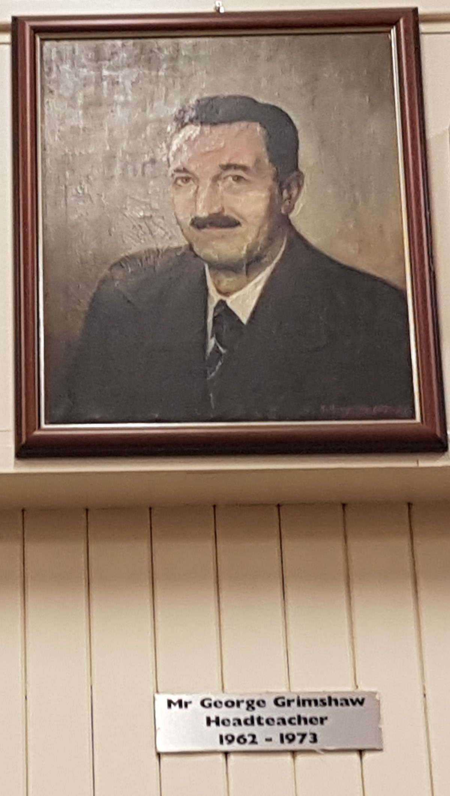
Mr George Grimshaw-First Headmaster
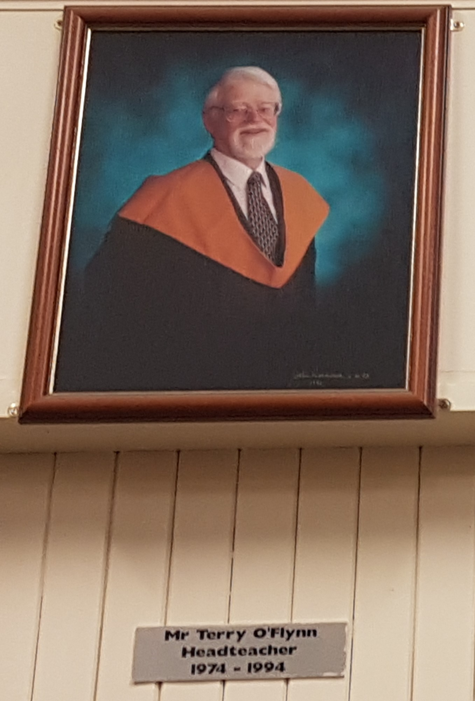
Mr Terry O Flynn- Second Head Teacher
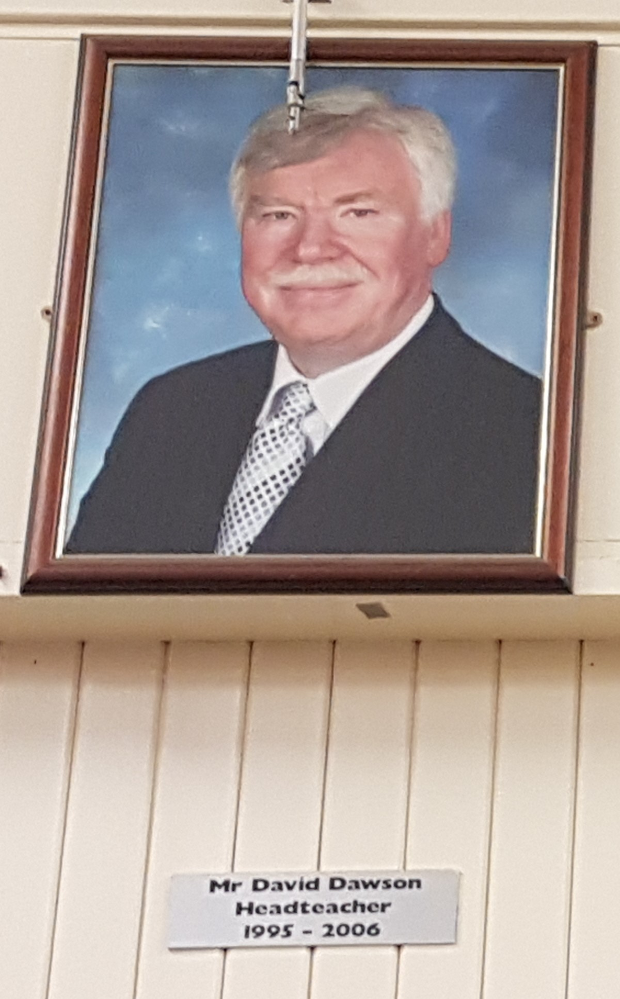
Mr David Dawson- Third Head Teacher
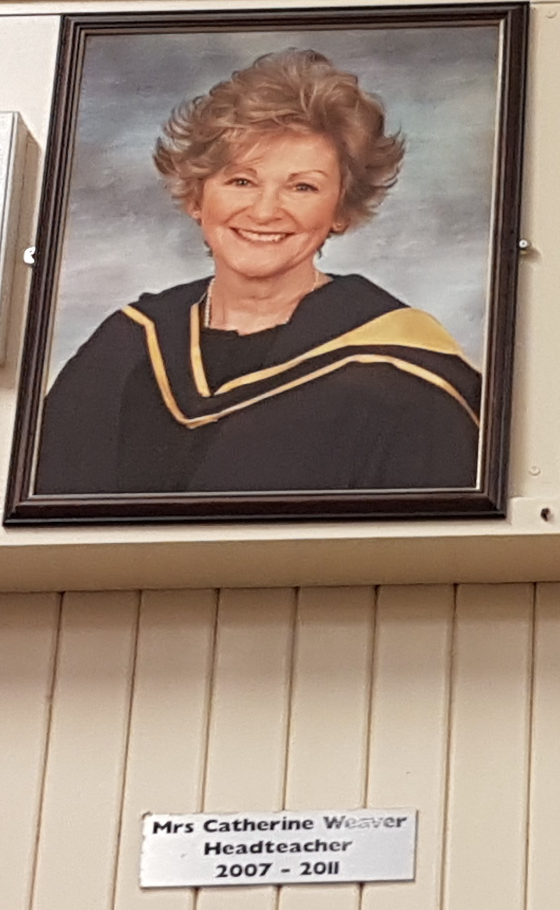
Mrs Catherine Weaver - Fourth Head Teacher
Mr Fraser Long - Fifth and Current Head Teacher
What makes our School Special?
Not many Catholic Schools have a standalone Chapel that can accommodate a whole year group. On top of that it is the only Catholic school in North Oxfordshire and its smaller size, compared to other comprehensive unit schools,makes
it possible to know all pupils and members of staff giving it a strong sense of identity focused on the Gospel. It has always striven to be first and foremost a good Catholic Secondary School with the time and resources given to
promoting well-grounded human beings who having had the opportunity to develop their God-given talents will make a positive contribution to society based on their belief in the God-given dignity of each person.